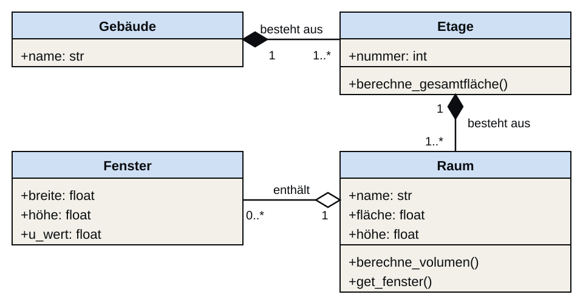

Objekte

The best way to predict the future is to invent it — and then encapsulate it in objects.
— Alan Kay
(Encapsulate = Daten und zulässige Operationen in einem Objekt bündeln.)
Warum in Objekten denken?
Objekte als Denkstrategie
Objekte
Objektorientierte Programmierung (OOP) ist ein Programmierparadigma, das annimmt, dass ein Programm aus Objekten besteht, die miteinander kooperativ interagieren. Jedes Objekt verfügt über Attribute (Eigenschaften) und Methoden (Verantwortlichkeiten).
In dieser Einheit betrachten wir Objekte als Entwurfskonzept — noch bevor wir eine Zeile Python schreiben. Das Ziel ist: Denken in Objekten, Beziehungen und Verantwortlichkeiten.
Warum in Objekten denken?
Die Objektorientierung löst grundlegende Probleme im Umgang mit sich wiederholenden Datenstrukturen in großen Programmen. Diese Probleme entstehen bereits beim Entwurf, nicht erst bei der Implementierung. Wir betrachten daher drei Probleme, die durch Objekte gelöst werden.
Das syntaktische Problem
Wächst das Programm an, so wächst auch die Menge der Variablen und Datenstrukturen. Dabei basieren die zugrundeliegenden Elemente meist auf sich wiederholenden Datenstrukturen. Analysiert man z.B. Baupläne oder Karten, so verwaltet man viele Punkt-Koordinaten — aber ohne Festlegung kann eine Koordinate unterschiedlich ausgedrückt werden. Das ist das syntaktische Problem. Objekte lösen es, indem sie die Syntax der Datenstruktur eindeutig definieren.
Das semantische Problem
Ein anderer Programmierer wird nicht ohne Weiteres die semantische Bedeutung der Werte verstehen. Um solche Unklarheiten zu beseitigen, will man der Datenstruktur eine klare semantische Definition geben. Objekte lösen das, indem sie Attributnamen vergeben, die die Bedeutung der Werte dokumentieren.
Das Verhaltensproblem
Objekte werden zudem verwendet, um die Funktionen zur Verarbeitung der Datenstrukturen direkt mit dieser zu bündeln, so dass die Datenstruktur nur jene Funktionen anbietet, welche auch sinnvoll anwendbar sind. Das vermeidet semantische und logische Fehler durch falsche Verwendung.
Klassen als Entwurfseinheiten
Klassen: Bauplan einer Entität
Klassen als Entwurfseinheiten
Eine Klasse ist der Entwurfsplan für eine Familie gleichartiger Objekte. Sie legt fest, welche Attribute (Eigenschaften) ein Objekt hat und welche Methoden (Operationen) es bereitstellt. Der Entwurf der Klasse kommt vor der Implementierung.
Klassen und Instanzen
Objekte selbst sind immer Instanzen einer Klasse (die Klasse ist ja nur ein Bauplan). Eine Klasse kann beliebig viele Instanzen haben oder gar keine. Alle Instanzen sind gleich aufgebaut, besitzen aber nicht unbedingt die gleichen Werte in den Attributen.
Beziehungen zwischen Objekten
Objektbeziehungen
Beziehungen zwischen Objekten
In Programmen stehen Objekte meist im Zusammenhang. Z.B. besteht eine Linie aus zwei Punkten. Diesen Zusammenhang zweier Objekt-Klassen bezeichnet man als Assoziation. Bei stärkerer Bindung spricht man von Aggregation (lose) oder Komposition (untrennbar). Diese Beziehungen müssen im Entwurf explizit festgehalten werden, bevor man sie in Code übersetzt.
UML-Klassendiagramm
Das UML-Klassendiagramm ist die standardisierte Notation für Objektbeziehungen. Rechtecke stellen Klassen dar (Name, Attribute, Methoden); Pfeile zeigen Beziehungen mit Richtung und Multiplizität. Die Notation wurde in 03c_Softwareentwurf (S03) eingeführt.
Weitere OOP-Konzepte
Kapselung, Vererbung, Polymorphismus
Weitere OOP-Konzepte
Zur Objektorientierung gehören nicht nur Klassen und Beziehungen, sondern auch Kapselung, Vererbung und Polymorphismus. Kapselung bedeutet, dass Daten und die für sie sinnvollen Operationen gemeinsam entworfen werden und der Zugriff bewusst geregelt wird. Vererbung beschreibt, dass eine speziellere Klasse Eigenschaften und Verantwortlichkeiten einer allgemeineren Klasse übernimmt. Polymorphismus bedeutet, dass verschiedene Klassen dieselbe Verantwortlichkeit anbieten können, aber jeweils unterschiedlich umsetzen.
Brücke zu Python: self
Im UML-Diagramm sprechen wir abstrakt über eine Klasse und ihre Verantwortlichkeiten. In Python muss eine Methode jedoch auf eine konkrete Instanz zugreifen können. Dafür gibt es self: Die Selbst-Referenz auf genau das Objekt, dessen Methode gerade ausgeführt wird. In 06b_Objects wird daraus dann die konkrete Syntax mit class, __init__ und self.attributname.
Design before you prompt
Design before you prompt
Der agentische Ansatz für Objektorientierung bedeutet: zuerst entwerfen, dann prompten. Das UML-Klassendiagramm ist die Spezifikation, die wir der KI übergeben. Ein minimales Beispiel wäre die Klasse Raum mit den Attributen name: str, fläche: float, höhe: float und der Methode berechne_volumen() -> float. Aus diesem Diagramm kann ein Prompt wie „Implementiere die Klasse Raum genau mit diesen Attributen und dieser Methode“ erzeugt werden. Danach vergleichen wir den generierten Code systematisch wieder mit dem Diagramm.
Dieser Zyklus — Entwerfen → Prompten → Generieren → Verifizieren — ist die Kernkompetenz des agentischen Programmierens für Objekte.
UML als Prompt-Vorlage
Ein UML-Klassendiagramm, das einer KI als Prompt übergeben wird, muss vollständig sein: Klassennamen, Attribute mit Typen, Methoden mit Parametern und Rückgabetypen, Beziehungen mit Richtung und Multiplizität. Für unser Raum-Beispiel heißt das: Nicht nur der Klassenname, sondern auch name: str, fläche: float, höhe: float und berechne_volumen() -> float müssen explizit genannt sein. Aus dem Diagramm formulieren wir dann einen präzisen Prompt, der die KI anweist, genau diese Spezifikation umzusetzen. Was nicht im Diagramm steht, wird die KI erfinden — und das oft falsch.
Verifizieren gegen das Diagramm
Die Verifikation ist der entscheidende Schritt im agentischen Workflow. Wer nur den generierten Code liest, ohne gegen das Diagramm zu prüfen, übersieht fehlende Attribute, falsche Beziehungstypen oder falsch typisierte Rückgabewerte. Wenn die KI z.B. eine Klasse Raum ohne berechne_volumen() oder ohne die Beziehung zu Fenster erzeugt, ist nicht “fast richtig”, sondern unvollständig. Das Diagramm ist das Kriterium — nicht das eigene Bauchgefühl. Erst wenn Code und Diagramm übereinstimmen, ist der Entwurf korrekt umgesetzt.
BIM-Beispiel: Gebäudehierarchie
Domänenzerlegung: Gebäude
BIM-Beispiel: Gebäudehierarchie

Ein typisches BIM-Modell lässt sich als Objekthierarchie ausdrücken: Gebäude → Etage → Raum → Fenster. Jede Klasse hat eigene Attribute (z.B. Raum.fläche, Fenster.u_wert) und eigene Verantwortlichkeiten (z.B. Etage.berechne_gesamtfläche()). Die Beziehungen — Komposition, Aggregation — müssen im Entwurf mit Multiplizitäten explizit festgehalten werden.
Für das Fenster werden die Attribute breite: float, höhe: float und u_wert: float modelliert. So wird klar, warum Fenster.u_wert im späteren Code oder in Berechnungen überhaupt vorkommt. Der Entwurf benennt also nicht nur die Objekte, sondern auch die fachlich relevanten Eigenschaften jeder Klasse.